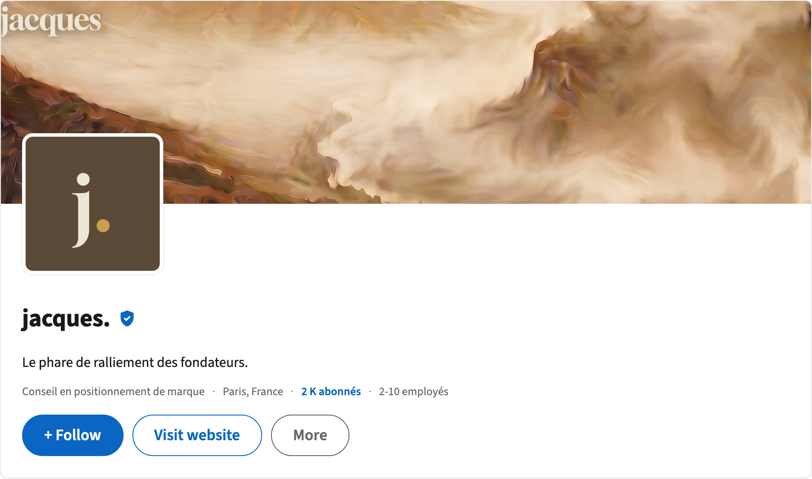
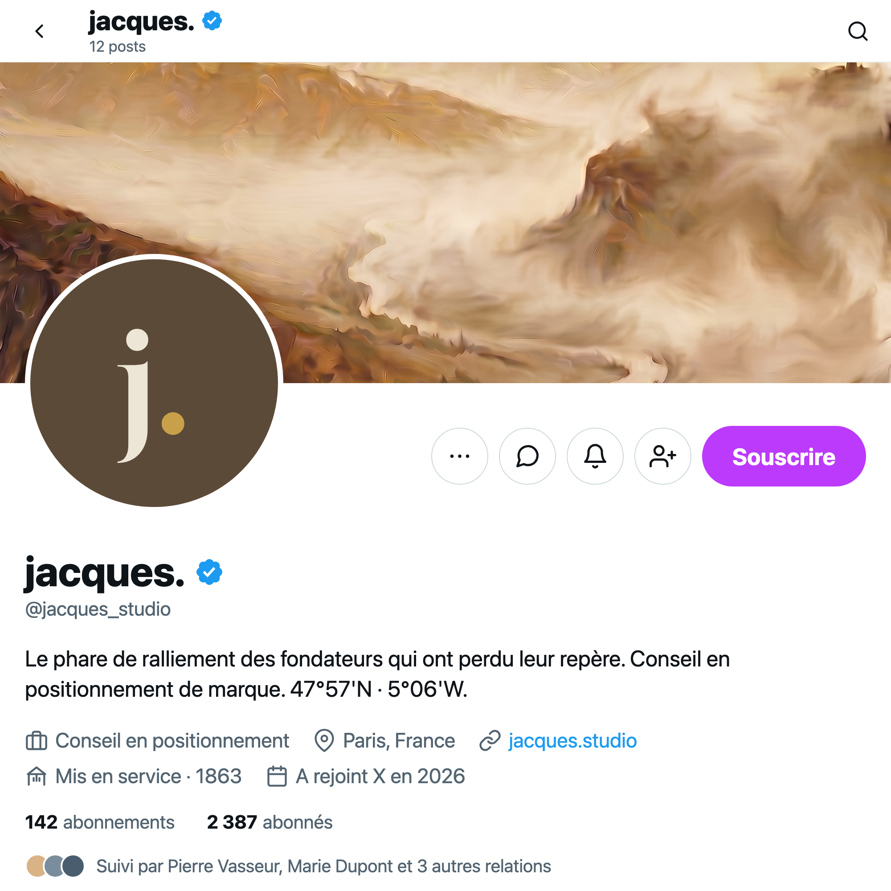

Le signe qui tient
Pas de symbole dessiné : le nom est le repère. Gloock pose une autorité gravée, et un seul foyer bronze ponctue la terminale — beaucoup de matière, un point chaud.
05.1
Wordmark & identité typographique
jacques
Display — Gloock
Sérif patrimonial à empattements affirmés. Le repère se tient depuis longtemps et tiendra encore : la gravité éditoriale signe une autorité de fait, pas une amabilité de surface.
La ponctuation chaude
Un seul foyer Bronze de Fresnel ponctue la terminale du mot — jamais multiplié, jamais étendu. C'est le signal microscopique dans la masse, exactement comme dans la métaphore directrice.
Casse basse
Le nom s'écrit en bas-de-casse : une posture posée, instrumentale, qui refuse la majuscule corporate. Le repère n'a pas besoin de hausser le ton pour porter loin.
05.2
Système de lockups
La version primaire domine — la grille est volontairement déséquilibrée (1,7 : 1) pour rejouer la disproportion signal/masse.
jacques
Primaire · usage signature
jacquesStudio de positionnement
Secondaire · avec descripteur
05.3
Zone d'exclusion & lisibilité
jacques
La zone d'exclusion équivaut à la hauteur de la lettre du wordmark sur les quatre côtés. Aucun élément graphique, texte ou bord de page n'entre dans cet espace — le repère a besoin de nuit autour de lui pour rester lisible.
05.4
Variantes de contexte
jacques
Positif · fond clair
jacques
Négatif · fond sombre
jacques
Monochrome · une encre
jacques
OLED · noir absolu


08c — Réseaux sociaux
Le repère, en présence sociale.
Profils entreprise · LinkedIn paysage · X carré

